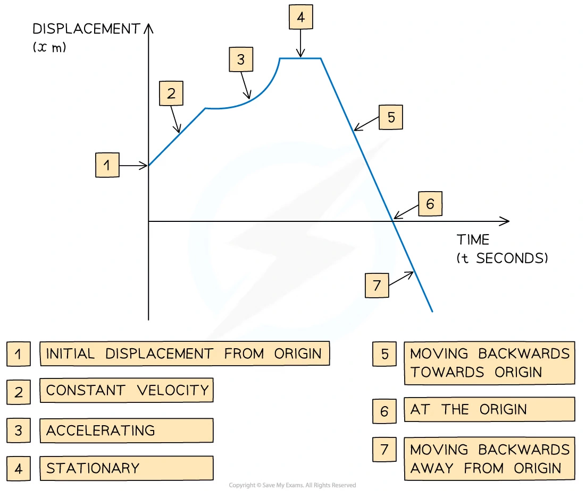
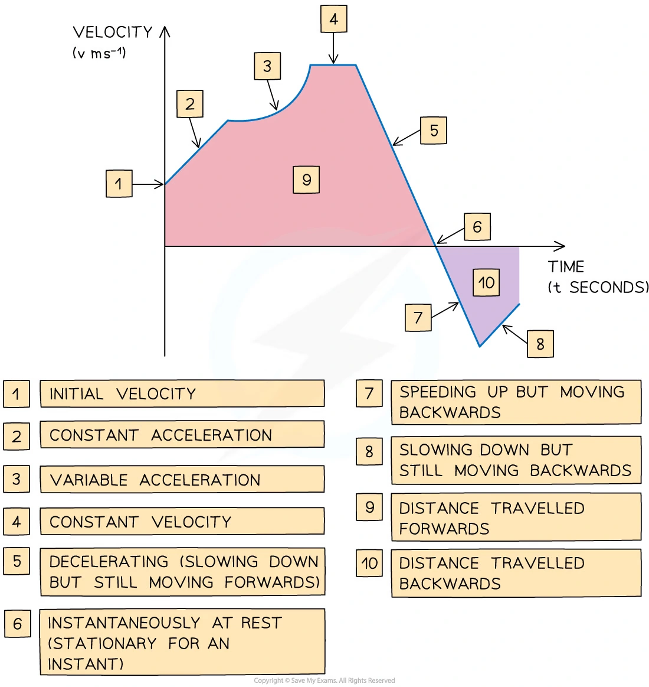
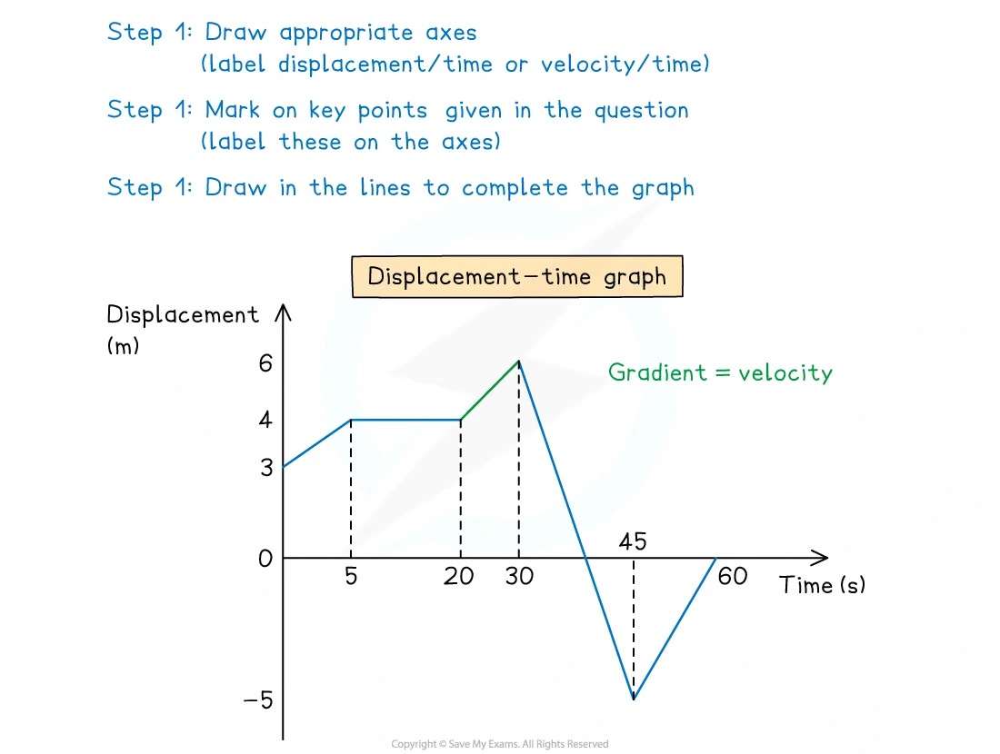
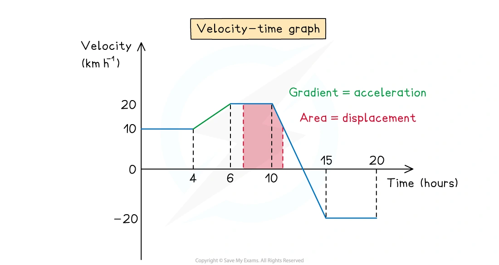
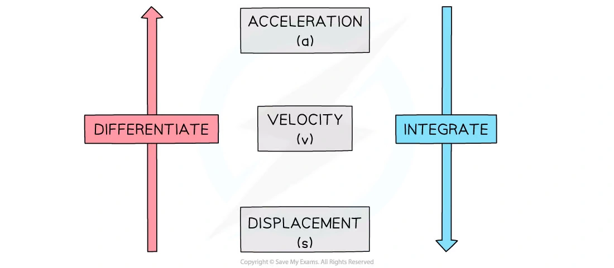
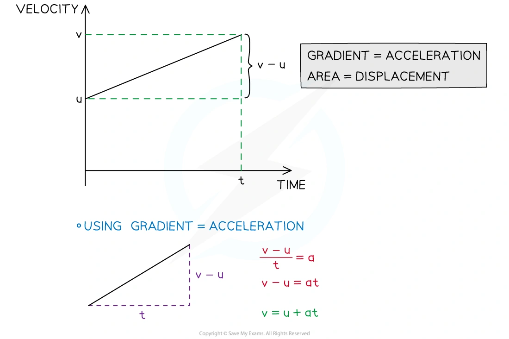
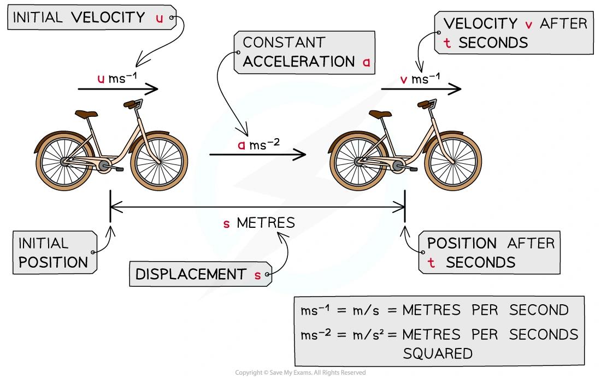
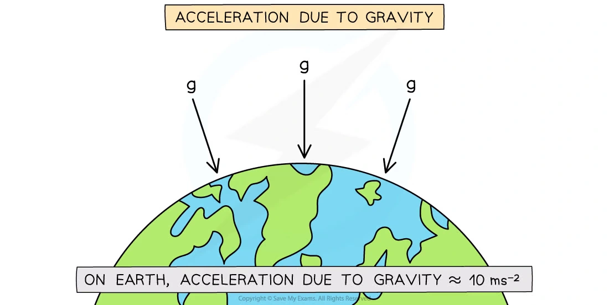
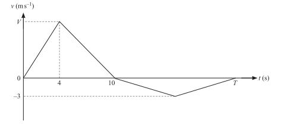
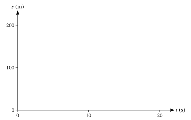

2. Kinematics of motion in a straight line
Graphs · calculus with time · constant acceleration · vertical motion
本页依据 9709 Mathematics 2026–2027 syllabus 4.2，覆盖：
- distance、speed、displacement、velocity、acceleration 的 scalar/vector nature；
- sketch and interpret displacement-time graphs and velocity-time graphs；
- displacement-time graph 的 gradient 是 velocity，velocity-time graph 的 gradient 是 acceleration；
- velocity-time graph 下的 area 是 displacement；
- 对 time 使用 differentiation 和 integration；
- 使用 constant-acceleration formulae 处理一维直线运动；
- 只讨论 motion in one dimension，所有数值题默认 g=10\,\mathrm{m\,s^{-2}}，除非题目另有说明。
Learning objectives
1. Core knowledge
Scalars, vectors and the three motion functions
Distance and speed are scalar quantities. Displacement, velocity and acceleration are vector quantities; in one-dimensional questions this means their signs depend on the chosen positive direction.
v=\frac{ds}{dt},\qquad a=\frac{dv}{dt}=\frac{d^2s}{dt^2}.
Average speed uses total distance, while average velocity uses displacement:
\text{average speed}=\frac{\text{total distance travelled}}{\text{time taken}}, \qquad \text{average velocity}=\frac{\text{displacement}}{\text{time taken}}.
Note knowledge image · Displacement-time graph

Displacement-time and velocity-time graphs
- Gradient of a displacement-time graph gives velocity.
- Gradient of a velocity-time graph gives acceleration.
- The signed area under a velocity-time graph gives displacement.
- Total distance is obtained by adding the magnitudes of the areas, including regions below the time axis.
- A horizontal displacement-time graph means instantaneous rest; a horizontal velocity-time graph means constant velocity.
Note worked example · Displacement-time graph
An athlete is training by jogging in a straight line. The displacement-time graph below shows the displacement of the athlete from her starting point throughout her motion.
The note asks:
Calculate the velocity of the athlete during the first 2 seconds.
Describe the motion of the athlete between the times of 2 seconds and 5 seconds.
Calculate the velocity of the athlete at 10 seconds.
Find the total distance travelled by the athlete during the 14 seconds.
Use the gradient for (a) and (c), the horizontal section for (b), and add the forward and backward distances for (d).
Note worked example · Velocity-time graph
The motion of a bird travelling in a straight line is tracked for 60 seconds. The velocity-time graph in the note asks:
Calculate the acceleration of the bird at 20 seconds.
Calculate the distance travelled in the first 28 seconds.
Calculate the displacement of the bird from its starting point after 60 seconds.
The worked solution uses the gradient for (a), the area above the axis for the forward distance in (b), and signed areas above and below the axis for (c).
Note knowledge image · Velocity-time graph

Note knowledge image · Drawing travel graphs

Note knowledge image · Signed areas on a velocity-time graph

Differentiation and integration with respect to time
For a function of time,
v=\frac{ds}{dt},\qquad a=\frac{dv}{dt},
and therefore
v=\int a\,dt,\qquad s=\int v\,dt.
Each integration needs a constant of integration. Use phrases such as “starting from rest” (v=0 at the stated time) and “returns to its starting point” (s=0 at the stated time) to determine it.
Note worked example · Using calculus in 1D
The velocity of a particle is modelled by
v=t^3-4t^2+3t.
Find the acceleration of the particle in terms of t.
Find the displacement of the particle, from its starting position, after 3 seconds.
The corresponding graph and solution are kept as a separate worked-example card; differentiate for (a), integrate for (b), and use s=0 at t=0.
Note knowledge image · Calculus links

Constant acceleration
For constant acceleration, with s measured from the chosen starting point,
v=u+at, v^2=u^2+2as, s=\frac12(u+v)t, s=ut+\frac12at^2, s=vt-\frac12at^2.
Choose the equation after listing the known and unknown quantities. The formulae apply only on an interval where the acceleration is constant. For multi-stage motion, restart the variables or carry the final velocity and displacement into the next stage.
Note worked example · Deriving a constant-acceleration formula
Use the constant-acceleration equations
s=\frac12(u+v)t\qquad\text{and}\qquad v=u+at
to show that
v^2=u^2+2as.
Substitute t=(v-u)/a into the displacement equation and rearrange.
Note knowledge image · SUVAT derivation

Note knowledge image · SUVAT quantities

Vertical motion and gravity
Take the chosen positive direction explicitly. If upwards is positive, then a=-g; if downwards is positive, then a=g. At maximum height, v=0 instantaneously. When a particle returns to its starting point, its displacement from that starting point is s=0, not necessarily its velocity.
Note worked example · Vertical projection
A toy rocket is projected vertically upwards from ground level with initial speed 18\,\mathrm{m\,s^{-1}}.
Find the maximum height the toy rocket reaches.
Find the time taken from the instant the toy rocket is projected to the instant it returns to the ground.
Use upwards as positive, a=-10\,\mathrm{m\,s^{-2}}, v=0 at maximum height, and s=0 when it returns to the starting point.
Note knowledge image · Gravity motion

2. Verified Paper 4 questions
Each card below keeps the complete selected question, including every sub-question and its original mark allocation. The wording is transcribed from the local question paper; it is not an invented practice question.
Question 1 · 9709/41/M/J/24 Q1(a–b)
A car starts from rest and accelerates at 2\,\mathrm{m\,s^{-2}} for 10\,\mathrm s. It then travels at a constant speed for 30\,\mathrm s. The car then uniformly decelerates to rest over a period of 20\,\mathrm s.
Sketch a velocity-time graph for the motion of the car. [2]
Find the total distance travelled by the car. [2]
Show detailed mark scheme answer
After 10 s the speed is
V=0+2(10)=20\,\mathrm{m\,s^{-1}}.
The graph consists of a triangle, a rectangle and a triangle. Hence
s=\frac12(10)(20)+(30)(20)+\frac12(20)(20) =100+600+200.
Therefore
\boxed{s=900\,\mathrm m}.Question 2 · 9709/41/M/J/24 Q6(a–b)
A particle moves in a straight line, starting from a point O. The velocity of the particle at time t\,\mathrm s after leaving O is v\,\mathrm{m\,s^{-1}}. It is given that
v=kt^{1/2}-2t-8,
where k is a positive constant. The maximum velocity of the particle is 4.5\,\mathrm{m\,s^{-1}}.
Show that k=10. [5]
- Verify that v=0 when t=1 and t=16. [1]
- Find the distance travelled by the particle in the first 16\,\mathrm s. [5]
Show detailed mark scheme answer
a=\frac{dv}{dt}=\frac{k}{2\sqrt t}-2.
At maximum velocity, a=0, so \sqrt t=k/4. Substitution into v=4.5 gives
\frac{k^2}{8}-8=4.5\quad\Rightarrow\quad k=10.
With k=10,
v=10\sqrt t-2t-8.
Putting x=\sqrt t gives 2x^2-10x+8=0, so x=1 or 4, hence t=1 or 16.
An antiderivative is
s=\frac{20}{3}t^{3/2}-t^2-8t.
The velocity is negative on 0<t<1 and positive on 1<t<16. Therefore
\text{distance}=-s(1)+[s(16)-s(1)] =\frac{22}{3}+50 =\boxed{57.3\,\mathrm m}\quad\text{(3 s.f.)}.Question 3 · 9709/41/O/N/24 Q4(a–c)
A bus travels between two stops, A and B. The bus starts from rest at A and accelerates at a constant rate of a\,\mathrm{m\,s^{-2}} until it reaches a speed of 16\,\mathrm{m\,s^{-1}}. It then travels at this constant speed before decelerating at a constant rate of 0.75a\,\mathrm{m\,s^{-2}}, coming to rest at B. The total time for the journey is 240\,\mathrm s.
Sketch the velocity-time graph for the bus’s journey from A to B. [1]
Find an expression, in terms of a, for the length of time that the bus is travelling with constant speed. [2]
Given that the distance from A to B is 3000\,\mathrm m, find the value of a. [3]
Show detailed mark scheme answer
Time accelerating: 16/a. Time decelerating:
\frac{16}{0.75a}=\frac{64}{3a}.
Thus the constant-speed time is
240-\frac{16}{a}-\frac{64}{3a} =\boxed{240-\frac{112}{3a}\ \mathrm s}.
Using the area under the velocity-time graph,
3000=\frac12(16)\frac{16}{a}+16\left(240-\frac{112}{3a}\right)+\frac12(16)\frac{64}{3a}.
This simplifies to 3000=3840-896/(3a), so
\boxed{a=\frac{32}{9}=3.56\,\mathrm{m\,s^{-2}}}\quad\text{(3 s.f.).}Question 4 · 9709/42/O/N/24 Q1(a–b)
The velocity of a particle moving in a straight line at time t seconds after leaving a fixed point O is v\,\mathrm{m\,s^{-1}}. The diagram shows a velocity-time graph which models the motion of the particle from t=0 to t=T. The graph consists of four straight line segments. The particle accelerates from rest to a speed of V\,\mathrm{m\,s^{-1}} over a period of 4 s, and then decelerates at \frac53\,\mathrm{m\,s^{-2}} to instantaneous rest over a period of 6 s. The particle then travels back towards O, reaching a maximum speed of 3\,\mathrm{m\,s^{-1}} before coming to rest at time t=T.

Find the value of V. [2]
Given that the total distance travelled by the particle from t=0 to t=T is 68\,\mathrm m, find the value of T. [3]
Show detailed mark scheme answer
From the second segment,
V=\frac53(6)=10\,\mathrm{m\,s^{-1}}.
The positive area is
\frac12(4)(10)+\frac12(6)(10)=50.
The remaining distance is below the axis and has magnitude 68-50=18:
\frac12(T-10)(3)=18.
Therefore
\boxed{T=22\,\mathrm s}.Question 5 · 9709/43/O/N/24 Q6(a–d)
A particle moves in a straight line. It starts from rest, at time t=0, and accelerates at 0.6t\,\mathrm{m\,s^{-2}} for 4 s, reaching a speed of V\,\mathrm{m\,s^{-1}}. The particle then travels at V\,\mathrm{m\,s^{-1}} for 11 s, and finally slows down, with constant deceleration, stopping after a further 5 s.
Show that V=4.8. [1]
Sketch a velocity-time graph for the motion. [3]
Find an expression, in terms of t, for the velocity of the particle for 15\le t\le20. [2]
Find the total distance travelled by the particle. [4]
Show detailed mark scheme answer
For the first 4 s,
V=\int_0^4 0.6t\,dt=0.3(4)^2=4.8.
The final section has constant acceleration
a=\frac{0-4.8}{5}=-0.96.
Hence, for 15\le t\le20,
v=4.8-0.96(t-15)=\boxed{19.2-0.96t}.
The total distance is the area under the graph:
s=\frac12(4)(4.8)+(11)(4.8)+\frac12(5)(4.8) =\boxed{74.4\,\mathrm m}.Question 6 · 9709/43/O/N/23 Q6(a)
A particle moves in a straight line. At time t\,\mathrm s, the acceleration, a\,\mathrm{m\,s^{-2}}, of the particle is given by
a=36-6t.
The velocity of the particle is 27\,\mathrm{m\,s^{-1}} when t=2.
- Find the values of t when the particle is at instantaneous rest. [4]
Show detailed mark scheme answer
Integrating,
v=36t-3t^2+C.
Using v=27 when t=2 gives C=-33. Thus
v=-3t^2+36t-33=-3(t-1)(t-11).
Therefore the particle is at instantaneous rest when
\boxed{t=1\,\mathrm s\text{ or }t=11\,\mathrm s}.Question 7 · 9709/41/M/J/23 Q3
A particle moves in a straight line starting from rest. The displacement s\,\mathrm m of the particle from a fixed point O on the line at time t\,\mathrm s is given by
s=t^{5/2}-\frac{15}{4}t^{3/2}+6.
Find the value of s when the particle is again at rest. [4]
Show detailed mark scheme answer
v=\frac{ds}{dt}=\frac52t^{3/2}-\frac{45}{8}t^{1/2} =\frac58\sqrt t(4t-9).
Besides t=0, the next time at rest is t=9/4. Hence
s=\left(\frac94\right)^{5/2}-\frac{15}{4}\left(\frac94\right)^{3/2}+6 =\boxed{\frac{15}{16}\,\mathrm m}.Question 8 · 9709/42/M/J/22 Q4(a–c)
A particle A, moving along a straight horizontal track with constant speed 8\,\mathrm{m\,s^{-1}}, passes a fixed point O. Four seconds later, another particle B passes O, moving along a parallel track in the same direction as A. Particle B has speed 20\,\mathrm{m\,s^{-1}} when it passes O and has a constant deceleration of 2\,\mathrm{m\,s^{-2}}. B comes to rest when it returns to O.
Find expressions, in terms of t, for the displacement from O of each particle t seconds after B passes O. [3]
Find the values of t when the particles are the same distance from O. [3]
On the given axes, sketch the displacement-time graphs for both particles, for values of t from 0 to 20. [3]

Show detailed mark scheme answer
At t=0, particle A is already 32\,\mathrm m beyond O, so
s_A=32+8t.
For B,
s_B=20t-t^2\qquad(0\le t\le20).
For the relevant interval, both displacements are non-negative. Equating them gives
32+8t=20t-t^2 \quad\Rightarrow\quad t^2-12t+32=0.
Therefore
\boxed{t=4\,\mathrm s\text{ or }t=8\,\mathrm s}.
The sketch for (c) is the straight line s_A=32+8t and the concave-down parabola s_B=20t-t^2, both over 0\le t\le20.Question 9 · 9709/41/M/J/21 Q4(a–b)
Two cyclists, Isabella and Maria, are having a race. They both travel along a straight road with constant acceleration, starting from rest at point A.
Isabella accelerates for 5 s at a constant rate a\,\mathrm{m\,s^{-2}}. She then travels at the constant speed she has reached for 10 s, before decelerating to rest at a constant rate over a period of 5 s.
Maria accelerates at a constant rate, reaching a speed of 5\,\mathrm{m\,s^{-1}} in a distance of 27.5\,\mathrm m. She then maintains this speed for a period of 10 s, before decelerating to rest at a constant rate over a period of 5 s.
Given that a=1.1, find which cyclist travels further. [5]
Find the value of a for which the two cyclists travel the same distance. [2]
Show detailed mark scheme answer
For Isabella, the final speed is 5a. Her total distance is
s_I=\frac12(5)(5a)+(10)(5a)+\frac12(5)(5a)=75a.
When a=1.1, s_I=82.5\,\mathrm m.
Maria travels 27.5+10(5)+\frac12(5)(5)=90\,\mathrm m, so Maria travels further.
For equal distance,
75a=90\quad\Rightarrow\quad\boxed{a=1.2\,\mathrm{m\,s^{-2}}}.Question 10 · 9709/42/M/J/20 Q1(a–c)
A tram starts from rest and moves with uniform acceleration for 20 s. The tram then travels at a constant speed, V\,\mathrm{m\,s^{-1}}, for 170 s before being brought to rest with a uniform deceleration of magnitude twice that of the acceleration. The total distance travelled by the tram is 2.775\,\mathrm{km}.
Sketch a velocity-time graph for the motion, stating the total time for which the tram is moving. [2]
Find V. [2]
Find the magnitude of the acceleration. [2]
Show detailed mark scheme answer
If the acceleration is a, then V=20a. The deceleration is 2a, so the final 0-to-V time is V/(2a)=10 s. The total moving time is therefore
\boxed{200\,\mathrm s}.
The area under the velocity-time graph is
2775=\frac12(20)V+170V+\frac12(10)V=185V.
Thus V=15\,\mathrm{m\,s^{-1}}, and
\boxed{a=\frac{15}{20}=0.75\,\mathrm{m\,s^{-2}}}.Question 11 · 9709/41/O/N/20 Q4
A particle P moves in a straight line. It starts from rest at a point O on the line and at time t\,\mathrm s after leaving O it has acceleration a\,\mathrm{m\,s^{-2}}, where
a=6t-18.
Find the distance P moves before it comes to instantaneous rest. [6]
Show detailed mark scheme answer
Integrating the acceleration and using v=0 at t=0,
v=3t^2-18t=3t(t-6).
The next time at instantaneous rest is t=6. Integrating again,
s=t^3-9t^2.
At t=6, s=216-324=-108\,\mathrm m. The particle has moved in one direction throughout 0<t<6, so the distance is
\boxed{108\,\mathrm m}.Question 12 · 9709/43/O/N/20 Q5(a–c)
A particle P moves in a straight line. It starts at a point O on the line and at time t\,\mathrm s after leaving O it has velocity v\,\mathrm{m\,s^{-1}}, where
v=4t^2-20t+21.
Find the values of t for which P is at instantaneous rest. [2]
Find the initial acceleration of P. [2]
Find the minimum velocity of P. [2]
Show detailed mark scheme answer
- Set v=0:
4t^2-20t+21=0 \quad\Rightarrow\quad (2t-3)(2t-7)=0.
Hence \boxed{t=1.5\,\mathrm s\text{ or }t=3.5\,\mathrm s}.
a=\frac{dv}{dt}=8t-20,
so the initial acceleration is \boxed{-20\,\mathrm{m\,s^{-2}}}.
- The minimum velocity occurs when a=0, so t=2.5. Therefore